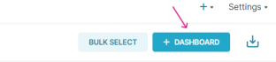
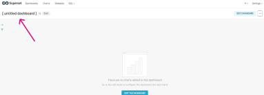
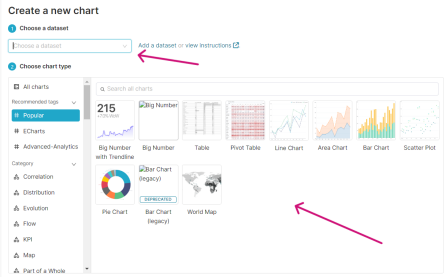
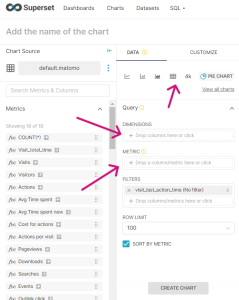
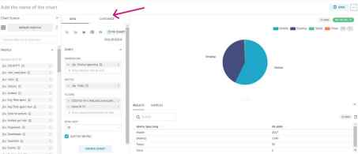
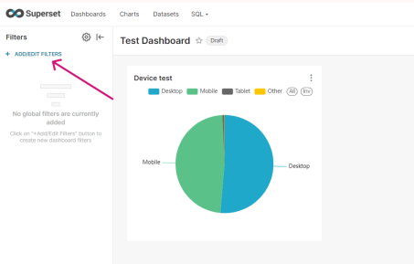
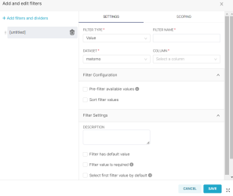
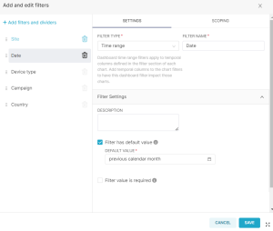
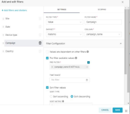
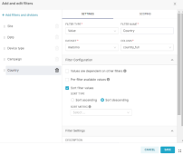

Introduction
This document aims to provide guidance on creating dashboards in RebelMetrics. The installation of RebelMetrics is
not covered here; the focus is on configuring dashboards from scratch and modifying existing ones.
Default Dashboards
RebelMetrics comes with a set of default dashboards that are intended to give you a quick start with your Matomo
Data.
Default Dashboard Examples:
Overview Dashboard
The Overview Dashboard provides a high-level summary of your data, including key metrics and trends.
Acquisition Dashboard
The Acquisition Dashboard focuses on how users are acquired, e.g., through campaigns, channels, or sources.
Transitions Dashboard
The Transitions Dashboard shows how users navigate to and from specific pages on your website or app.
Events Dashboard
The Events Dashboard give you an overview of you custom events in Matomo, with easy to use filters.
Media Dashboard
The Media Dashboard focuses on how users interact with media content on your website or app.
All sites info
The All sites info Dashboard provides a summary of all your sites and data in one place.
Create a Dashboard from Scratch
- Click the button to create a new dashboard.

- Name your dashboard, for example, “Test Dashboard” or “Goals and Conversions,” etc., and click save.

- Click “CREATE A NEW CHART”. Select a data source and then choose the type of chart you want to use for
visualization. Click “CREATE NEW CHART” to proceed. Please refer to the section on Choosing the Right Chart Type below under Tips and Tricks for some guidance.

- You can change the chart type if you prefer something else. Then select the dimensions and metrics you want to
view by either dragging and dropping or by typing in the field and clicking “CREATE CHART”.

- By clicking “CUSTOMIZE,” you can make further adjustments. When you feel done, click save.

- Your dashboard now has its first chart. Create more charts or choose from those created previously.
Create Dashboard Filters
Dashboard Filters provide additional segmentation and analysis capabilities. Create filters by clicking “+ ADD/EDIT
FILTERS”.

Then fill in the fields needed to create the filter you are interested in. Below are examples of how different filter
setups might look.

Date

Campaign

Country

You can also copy a default dashboard with filters and then modify, remove, or add filters as needed.
Modify an Existing Dashboard
- Copy: To avoid unintentionally changing an existing dashboard, you can copy all functionality
to a new dashboard that you can then edit freely.
- Edit charts: Click a chart and select "Edit" to edit. You can adjust dimensions, metrics,
filters, and visual settings. Remember to copy the chart and save it as a new one; otherwise, the original chart
will be overwritten.
- Add new charts: Use the "Add Chart" button to add new charts to your dashboard. You can use the
same data source or new data sources.
- Remove charts: Click a chart and select "Remove" to remove it from your dashboard.
- Reorganize the Layout: Drag and drop the charts to rearrange them on your dashboard. Adjust
size and shape as needed. You can also click “LAYOUT ELEMENTS” to add rows, text, or a box with the company's
logo, for example.
- Save changes: Remember to save your changes to update the dashboard.
Tips and Tricks
Choosing Dimensions and Metrics:
- Your choice of dimension and metric depends on what you want to visualize and analyze.
- Think about the questions you want to answer with your visualization.
Dimensions and Metrics:
- Dimensions: represent categories or groups in your data, e.g., product name, customer segment,
time periods. They are usually shown on the X-axis or in segments in charts.
- Metrics: represent numerical values or quantities in your data, e.g., sales, number of clicks,
average value. They are usually shown on the Y-axis or as values in charts.
Choosing the Right Chart Type:
- Different chart types are suitable for visualizing different types of data and trends.
- Bar Charts: good for comparing categories or groups.
- Line Charts: good for showing trends over time.
- Pie Charts: good for showing proportions of a whole.
- Scatter Plots: good for identifying patterns and correlations between variables.
Using Filters:
- Filters allow you to focus on specific subsets of data and avoid irrelevant results.
- Combine filters to create more detailed views of your data.
- Use the "Explore" function to preview the effect of filters.
Creating a Coherent Dashboard:
- Group related charts on your dashboard.
- Use consistent formatting and colors to create a unified look.
- Add text and descriptions to provide context and insights.
Good luck!